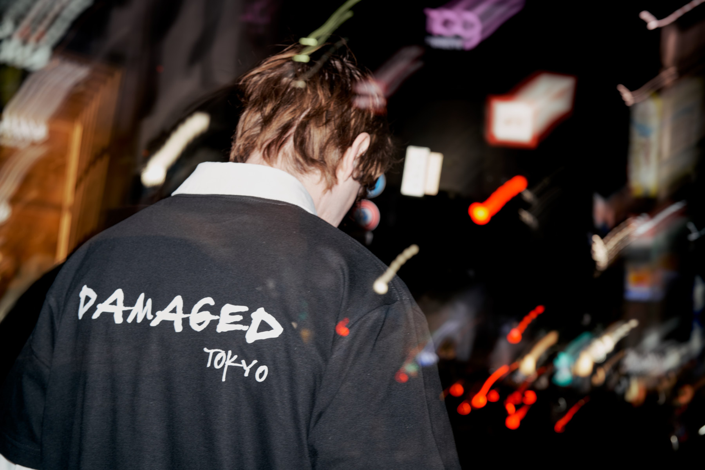

Photographing the individual,
not the role.
 Portrait
Portrait

Project — Damaged Tokyo Architecture
Architecture
 Project — Bunkyo School
Project — Bunkyo School
 Fashion
Fashion
 Project — Russia → Morocco
Project — Russia → Morocco
 Portrait
Portrait